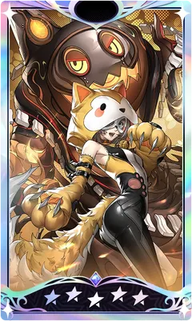

HOWLER Runa Dogenzaka
Fonte: https://lufel.net/en/character/howler/ · letto il 2026-11-14 con il browser integrato (spoiler attivi) · Stato Global: rilasciata. Convenzione: nomi di skill, awareness, armi, Persona, set e stat lasciati in inglese come su lufel.net; condizioni ed effetti tradotti in italiano. Valori skill = LV10 / LV10+Minds 5 / LV13 / LV13+Minds 5. Valori armi = refinement R0/R1/R2/R3/R4/R5/R6.
Scheda#
| Campo | Valore |
|---|---|
| Nome | Runa Dogenzaka |
| Codename | HOWLER |
| Persona | Aura |
| Rarità / tipo | 5★ · Standard |
| Elemento | Fire |
| Posizione | Saboteur |
| Ruolo (lufel) | Fire Debuffer |
| Tag (lufel) | Resonance single · Fire AoE · Damage Taken · Defense Reduction · Burn |
| Resistenza / Debolezza | Res: Fire · Wk: Wind |
Character Review (lufel)#
- Debuffer che potenzia il danno elementale (Fire, Ice, Electric, Wind) o il danno Resonance.
- Usare la Skill 1, che supporta gli attacchi elementali AoE (Fire, Ice, Electric, Wind), o la Skill 2, che potenzia gli attacchi Resonance single-target, sblocca la Skill 3.
- Per massimizzare l'effetto di Defense Reduction delle skill si consiglia di portare l'Ailment Accuracy alla soglia indicata.
Pro - Possiede un forte debuff di Defense Reduction. - Applica un debuff di riduzione delle cure.
Contro - I bonus di danno valgono solo per attacchi elementali (Fire, Ice, Electric, Wind) e Resonance.
Recommended Setup (lufel)#
Nota lufel: le impostazioni consigliate sono basate su contenuti futuri; alcune funzioni potrebbero non essere ancora disponibili (Revelation, Mindscape, ecc.).
- Revelation — Space: Freedom (tooltip "Freedom - Defeat": aumenta dell'8% il DMG inflitto da tutti gli alleati ai nemici con debuff, non cumulabile) · oppure Departure (tooltip "Departure - Control": riduce la DEF del bersaglio principale del 23% per 2 turni dopo averlo attaccato con una skill) · oppure Creation (tooltip "Creation - Reconcilation": all'inizio della battaglia aumenta del 12% il DMG inflitto dall'alleato con la SPD più bassa, non cumulabile) · Sun/Moon/Star/Sky: Defeat (2-Set: Ailment Accuracy Rate +15% · 4-Set: danno Fire ai nemici con alterazioni +20%) · oppure Control (2-Set: HP +12% · 4-Set: quando usa skill per attaccare un nemico, infligge al bersaglio principale danno aggiuntivo pari all'8% dei propri HP) · oppure Reconcilation (2-Set: Speed +6 · 4-Set: in combattimento HP, ATK e DEF +15%)
- Main Options — Sun: HP · Moon: "-" · Star: Ailment Accuracy · Sky: "-"
- Sub Options — 1ª priorità: Ailment Accuracy · 2ª: Crit Rate / Crit Mult / Damage Mult · 3ª: Attack / Pierce Rate
- Recommended Stats — LV10: Ailment Accuracy 171.5% · LV10+Minds 5: Ailment Accuracy 189.0% · LV13: Ailment Accuracy 181.9% · LV13+Minds 5: Ailment Accuracy 199.4%
- Battle Entry + — Exclusive Weapon: Ailment Accuracy · Thieves Den 2.3% (o più) · Thieves Den Rating
- Priorità skill — 1º Skill 3 · 2º Skill 1 · 3º Skill 2 · 4º Highlight (tutte MAX)
- Mindscape (LV 5) — Rank Strengthening 1: Damage Mult 16% · Rank Strengthening 2: Ailment Accuracy 24% · Skill Enforce 1: Skill3 / HIGHLIGHT · Skill Enforce 2: Skill1 / Skill2
- Skill Rotation — A0 (Single): 2 › 3 › 2 › 3 › 2 › 3 · A0 (Multi): 1 › 3 › 1 › 3 › 1 › 3 · A6 (Single): 3 › 2 › 1 › 3 › 2 › 1 · A6 (Multi): 3 › 1 › 2 › 3 › 1 › 2
- Notes (lufel) — nessuna nota.
Skills (LV10 / LV10+Minds 5 / LV13 / LV13+Minds 5)#
Skill 1 — Welcome Hug (Fire · SP 22) Infligge danno Fire a tutti i nemici pari al 73.2%/80.7%/77.7%/85.2% dell'Attack. Riduce la Defense del bersaglio del 15.4% dell'Ailment Accuracy di Runa per 2 turni (fino al 26.4%/29.1%/28.0%/30.7%). Inoltre, quando il bersaglio di questo effetto subisce danno da skill Fire, Ice, Electric o Wind, riduce ulteriormente la Defense del 26.4%/26.4%/28.0%/28.0%. Gli effetti di riduzione Defense di questa skill e di Furrious Bark non si cumulano. Inoltre 50% di probabilità di applicare Burn al bersaglio, e ottiene Big Welcome per 2 turni.
Skill 2 — Furrious Bark (Fire · SP 22) Infligge danno Fire a 1 nemico pari al 170.8%/188.3%/181.3%/198.8% dell'Attack. Riduce la Defense del bersaglio del 14.6%/14.6%/15.5%/15.5% + 31.4% dell'Ailment Accuracy di Runa (fino al 53.7%/59.2%/57.0%/62.5%) per 2 turni. Gli effetti di riduzione Defense di questa skill e di Welcome Hug non si cumulano. Inoltre ottiene Furrocious Follow-Up per 2 turni.
Skill 3 — Woof Woof Blaze (Fire · SP 26) Usabile quando Big Welcome o Furrocious Follow-Up sono attivi; attiva effetti diversi in base a quale è attivo (se entrambi, ha priorità Big Welcome). Dopo l'attivazione rimuove Big Welcome e Furrocious Follow-Up. Big Welcome: infligge danno Fire a tutti i nemici pari al 109.8%/109.8%/116.6%/116.6% dell'Attack (conta come Resonance); aumenta il danno subito dal bersaglio del 24% dell'Ailment Accuracy di Runa (fino al 41.0%/45.2%/43.5%/47.7%) e il danno Fire, Ice, Electric e Wind subito del 20.5%/22.6%/21.8%/23.9% per 2 turni. Furrocious Follow-Up: infligge danno Fire a 1 nemico pari al 219.6%/219.6%/233.1%/233.1% dell'Attack (conta come Resonance); aumenta il danno subito dal bersaglio del 34.3% dell'Ailment Accuracy di Runa (fino al 58.6%/64.6%/62.2%/68.2%) e il danno Resonance subito del 39.0%/43.0%/41.4%/45.4% per 2 turni.
HIGHLIGHT (cooldown 4 turni) Infligge danno Fire a tutti i nemici pari al 214.7%/236.7%/227.9%/249.9% dell'Attack. Applica permanentemente 2 stack di Enthusiastic Fuse ai nemici (massimo 2; rimossi con l'avanzare delle wave). Enthusiastic Fuse: quando un nemico subisce danno da skill Fire, Ice, Electric o Wind o danno Resonance, spende 1 stack di Enthusiastic Fuse e aumenta quel danno del 31.4% dell'Ailment Accuracy di Runa (fino al 53.7%/59.2%/57.0%/62.5%). Se l'effetto è attivato da skill e Resonance di Runa, Enthusiastic Fuse non viene speso.
Passiva — Peppy Guard Dog: in battaglia aumenta l'Attack di Runa del 60.0% della sua Ailment Accuracy.
Passiva — Faithful Dog: quando Runa applica un debuff a un nemico con una skill, Attack +33.0% per 1 turno. Quando un alleato infligge danno Fire, Ice, Electric o Wind o danno Resonance, gli concede lo stesso aumento di Attack.
Awareness#
- A0 — Station Square Mascot (talento base): quando Big Welcome o Furrocious Follow-Up sono attivi, Runa può usare Woof Woof Blaze. Usando Woof Woof Blaze, 60% di probabilità di ridurre le cure ricevute dal bersaglio del 30%/40%/50% e la Defense del 6%/12%/18% (l'effetto cambia rispettivamente ai livelli 1/50/70) per 2 turni.
- A1 — Legendary Devotion: dopo Woof Woof Blaze con gli effetti di Big Welcome, aumenta del 36% il danno Fire, Ice, Electric e Wind subito dal bersaglio per 2 turni. Con gli effetti di Furrocious Follow-Up, aumenta del 50% il danno Resonance subito dal bersaglio per 2 turni.
- A2 — Trapped in Shibuya: quando un nemico ha un debuff applicato da Runa, danno critico subito +36% e cure ricevute −20%.
- A3 — I ♥ Shichi-kun!: aumenta di 3 i livelli di skill di Woof Woof Blaze e Thief Tactics.
- A4 — Welcome to Shibuya!: Highlight Enhanced: gli stack di Enthusiastic Fuse applicati ai nemici diventano 4 e il massimo sale a 4.
- A5 — I ♥ Shibuya!: aumenta di 3 i livelli di skill di Welcome Hug e Furrious Bark.
- A6 — Station Square Superstar: all'inizio della battaglia ottiene Big Welcome e Furrocious Follow-Up per 2 turni. Estende di 1 turno la durata dei debuff di Welcome Hug, Furrious Bark e Woof Woof Blaze. Quando Big Welcome e Furrocious Follow-Up sono entrambi attivi, l'effetto di Woof Woof Blaze sul danno Fire, Ice, Electric e Wind subito da tutti i nemici aumenta del 30%, l'effetto sul danno Resonance subito dal bersaglio principale aumenta del 60%, e gli effetti concessi da Big Welcome e Furrocious Follow-Up si attivano entrambi (gli aumenti di danno subito non si cumulano: si applica il maggiore).
Stats#
- Base (LV1): HP 288 · ATK 94 · DEF 58 · Speed 105
- Hidden Ability LV7: Ailment Accur. 34.9%
- LV80 (HP / ATK / DEF): A0 3240 / 1060 / 653 · A1 3298 / 1079 / 665 · A2 3357 / 1098 / 677 · A3 3415 / 1118 / 689 · A4 3474 / 1136 / 701 · A5 3532 / 1155 / 713 · A6 3590 / 1174 / 724
Armi esclusive (valori R0/R1/R2/R3/R4/R5/R6)#
5★ Cerberus Claws — HP 2141 · ATK 700 · DEF 432 - Aumenta l'Ailment Accuracy del 36.0%/36.0%/47.0%/47.0%/58.0%/58.0%/69.0%. - Quando un alleato usa una skill Fire, Ice, Electric o Wind o attiva una Resonance, aumenta l'Ailment Accuracy di Runa del 23.0%/28.0%/28.0%/33.0%/33.0%/38.0%/38.0% per 2 turni (non cumulabile). - Usando Woof Woof Blaze con l'effetto di Big Welcome, riduce ulteriormente la Defense del bersaglio del 16.6%/21.6%/21.6%/26.6%/26.6%/31.6%/31.6% per 3 turni; con l'effetto di Furrocious Follow-Up, riduce ulteriormente la Defense del bersaglio del 33.3%/43.3%/43.3%/53.3%/53.3%/63.3%/63.3% per 3 turni. Questi 2 debuff non si cumulano.
4★ Hunting Hound Claws — HP 1712 · ATK 560 · DEF 346 - Aumenta l'Attack del 12.0%/12.0%/16.0%/16.0%/20.0%/20.0%/24.0%. - Quando Big Welcome o Furrocious Follow-Up è attivo, aumenta l'Ailment Accuracy di Runa del 22.0%/28.5%/28.5%/35.0%/35.0%/41.5%/41.5%.
Attribute Mindscape (lufel: introdotto in KR V5.2, forse non ancora su Global)#
- Mindscape Synergy — nessuna consigliata da lufel (slot vuoto, "Click to select").
- Mindscape Combat Skill — nessuna consigliata da lufel (slot vuoto, "Click to select").
Recommended Combination (lufel)#
- Sezione non presente nella pagina lufel di questo personaggio.
Recommended Parties (lufel)#
Nota lufel: la maggior parte degli esempi di party è stata scritta attorno all'uscita KR/CN del personaggio; Thieves o Mindscape Core successivi potrebbero non essere considerati. Solo riferimento. - Lineup — MONT·Frostgale: la sinergia tra l'aumento del danno Resonance di Runa e la riduzione DEF single-target è massima. · BUI: stessa sinergia (aumento del danno Resonance + riduzione DEF single-target). · RIN·Firecracker: Runa applica una riduzione DEF AoE, applica Burn e aumenta il danno Fire subito dai nemici. - Party d'esempio — HOWLER / MONT·Frostgale / WIND·Tempest / ORACLE · HOWLER / MATOI / RIN·Firecracker / ORACLE
Nomenclatura#
- lufel: "Runa Dogenzaka" (codename HOWLER), slug URL
howler. Stati/risorse: Big Welcome, Furrocious Follow-Up, Enthusiastic Fuse. Il nome lufel della Skill 2 è "Furrious Bark" (grafia lufel). - Nelle descrizioni lufel "ailment accuracy" = Ailment Accuracy, "critical damage" = Crit Mult.